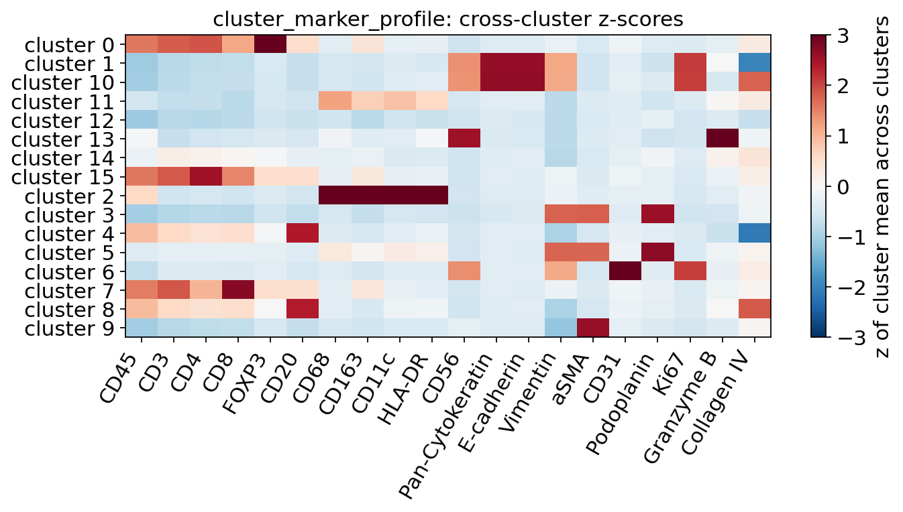

Annotating clusters of a targeted marker panel from a marker knowledge base#
Multiplexed imaging (CODEX / PhenoCycler, MIBI, IMC, CyCIF, multiplex IF) and targeted in-situ panels measure a few dozen markers per cell, not a transcriptome. After segmentation and clustering, every cluster has to be named from a handful of markers — and in practice this step is usually done by eye, with a marker table typed into the analysis script. That is where most irreproducibility in panel studies comes from: the table encodes one person’s memory of the literature, an antibody name is silently mapped to the wrong gene, and a cluster that fits nothing well is quietly forced into the nearest label.
ov.space splits the job into reproducible, auditable steps:
Step |
Function |
What it does |
|---|---|---|
panel names → genes |
|
resolves antibody / protein names (“CD20”, “E-cadherin”, “Granzyme B”) to HGNC gene symbols through HGNC, MyGene.info, UniProt and the Antibody Registry, and reports how each name was matched |
labels → signed signatures |
|
builds |
cluster statistics |
|
per-cluster means, positive fractions (Otsu per marker), cross-cluster z-scores, stand-out markers |
scoring |
|
presence test → best signature → children resolved inside their parent → residual (“unassigned”) label; every call carries its evidence and a |
spatial context |
|
what each cluster’s cells are surrounded by — supporting evidence and the basis for re-assigning clusters with no usable signature |
deliverable |
|
write the cluster → label table straight from the scorer, accept manual overrides only for clusters the scorer left open (with written evidence), keep a sidecar audit file, and re-check a deliverable later |
The principle: the biology comes from a database, the decisions come from the data, and every deviation is written down. No marker table is typed into this notebook.
When to use it. Any cells × markers table with cluster ids — protein panels (arcsinh-transformed intensities) or small targeted RNA panels. For whole-transcriptome data use the reference-based or marker-gene annotation tutorials instead.
Data in this tutorial. We simulate a colon-mucosa-like CODEX section (epithelium, stroma with vessels and smooth muscle, a lymphoid aggregate) measured with a 20-antibody panel. The marker programme of every cell type is generated from the fetched knowledge-base signatures, with realistic intensity noise, lateral spill-over between touching cells and a population that matches no label, so we know the ground truth and can score the annotation.
1. Setup#
markerdb_signatures queries public services (HGNC, MyGene.info, EBI OLS,
UniProt, Antibody Registry) and the OmicosAnno marker atlas. The atlas
marker endpoint needs an OmicOS account token in the environment
variable OMICOS_USER_TOKEN (OmicOS kernels inject it automatically;
elsewhere export it before starting Jupyter — never paste it into a
notebook). Every network result is stored in the JSON file given as
cache=, so re-running the notebook, or sharing the cache with a
collaborator, needs no further network access.
import os
import numpy as np
import pandas as pd
import matplotlib.pyplot as plt
import omicverse as ov
ov.plot_set()
pd.set_option('display.max_colwidth', 110)
print('OMICOS_USER_TOKEN set:', bool(os.environ.get('OMICOS_USER_TOKEN')))
CACHE = 'markerdb_cache.json'
🔬 Starting plot initialization...
🧬 Detecting GPU devices…
🚫 No GPU devices found (CUDA/MPS/ROCm/XPU)
____ _ _ __
/ __ \____ ___ (_)___| | / /__ _____________
/ / / / __ `__ \/ / ___/ | / / _ \/ ___/ ___/ _ \
/ /_/ / / / / / / / /__ | |/ / __/ / (__ ) __/
\____/_/ /_/ /_/_/\___/ |___/\___/_/ /____/\___/
🔖 Version: 2.3.2 📚 Tutorials: https://omicverse.readthedocs.io/
✅ plot_set complete.
OMICOS_USER_TOKEN set: True
2. From antibody names to genes: panel_gene_map#
Panel columns are named after antibodies, not genes: CD20 is MS4A1,
CD31 is PECAM1, E-cadherin is CDH1. Knowledge bases are indexed by
gene, so the first step is nomenclature. panel_gene_map tries the
approved HGNC symbol first, then HGNC aliases / previous symbols, then
MyGene.info, symbol stems (CD3 → the CD3 chains), gene families and
protein names. The sources dict tells you which rule matched each
name — anything other than symbol deserves a look.
panel = ['CD45', 'CD3', 'CD4', 'CD8', 'FOXP3', 'CD20', 'CD68', 'CD163', 'CD11c',
'HLA-DR', 'CD56', 'Pan-Cytokeratin', 'E-cadherin', 'Vimentin', 'aSMA',
'CD31', 'Podoplanin', 'Ki67', 'Granzyme B', 'Collagen IV']
sources = {}
gene_map, unresolved = ov.space.panel_gene_map(panel, sources=sources)
gm_table = pd.DataFrame({'genes': [', '.join(gene_map.get(m, [])) for m in panel],
'matched by': [sources.get(m, '-') for m in panel]}, index=panel)
print('unresolved:', unresolved)
gm_table
unresolved: ['HLA-DR', 'Pan-Cytokeratin', 'Collagen IV']
genes matched by
CD45 PTPRC alias
CD3 CD3D, CD3E, CD3G, CD3W stem
CD4 CD4 symbol
CD8 CD8A alias
FOXP3 FOXP3 symbol
CD20 MS4A1 alias
CD68 CD68 symbol
CD163 CD163 symbol
CD11c ITGAX alias
HLA-DR -
CD56 NCAM1 alias
Pan-Cytokeratin -
E-cadherin CDH1 name
Vimentin VIM, VIM2P, VMAC name
aSMA ACTA2 antibody
CD31 PECAM1 alias
Podoplanin PDPN name
Ki67 MKI67 alias
Granzyme B GZMB name
Collagen IV -
Most names resolve through nomenclature. Three rows are worth reading:
aSMA→ACTA2, matched byantibody. A name led by a lower-case Greek letter is a protein-name abbreviation (α-SMA, alpha-smooth-muscle actin), not a gene symbol, so it is resolved through its spelled-out name: HGNC and UniProt names first, then the UniProt target that the antibodies registered under that name (Antibody Registry, RRID) declare. A case-insensitive alias lookup would return ACTA1 instead: NCBI listsASMA(alpha-skeletal-muscle actin) as an ACTA1 alias. That is whymatched bymatters: anything other thansymboldeserves a look.Ki67→MKI67through the nomenclature spellingKi-67.Unresolved names (
Pan-Cytokeratin,HLA-DR,Collagen IVhere) match several genes or none. Without a gene they cannot carry knowledge-base evidence.markerdb_signaturesretries such names against UniProt protein names and the Antibody Registry and disambiguates multi-gene hits by how often each gene is used as a marker in the atlas.
Nomenclature fixes are the only manual input allowed:
gene_overrides={marker: [genes]} states which protein an antibody
detects (protein_names={marker: full protein name} is the alternative
when you would rather let HGNC pick the gene from the protein’s name);
neither ever says which cell type a marker belongs to. This panel needs
neither.
2b. When a nomenclature service fails: failed= and kb['lookup_failed']#
Every name is resolved through public web services. A rate limit or an
outage must not be read as “this name has no gene”: a defining marker would
silently drop out of every signature, and every downstream call could still
look confident. Requests are therefore retried with backoff; a name whose
lookup still hits a network / service error is reported — by
panel_gene_map in the list passed as failed=, by markerdb_signatures
in kb['lookup_failed'] with a warning — and is not cached, so calling
again with the same cache retries exactly those names. With the services
up, the list is empty:
import warnings
warnings.filterwarnings('ignore', category=FutureWarning)
import omicverse as ov
failed = []
gm, unresolved = ov.space.panel_gene_map(['CD20', 'Ki67', 'PD-L1', 'CD68'], failed=failed)
print('gene map :', gm)
print('unresolved :', unresolved)
print('failed lookups :', failed)
gene map : {'CD20': ['MS4A1'], 'Ki67': ['MKI67'], 'PD-L1': ['CD274'], 'CD68': ['CD68']}
unresolved : []
failed lookups : []
Make it a rule of the pipeline: if kb['lookup_failed'] is not empty,
wait and call markerdb_signatures again with the same arguments and cache
until it is — never score with a panel whose names could not be looked
up.
3. Signed signatures from the marker knowledge base: markerdb_signatures#
We give the cell-type vocabulary we want to use (a study’s label set,
deliberately including a parent T cell and three of its subtypes) and the
panel. For every label the function
matches the label to an atlas cell type and a Cell Ontology (CL) term;
pulls its positive and negative marker statements with their paper counts; a statement’s weight is its support relative to the label’s best-supported marker (the defining marker weighs 1);
lets a label inherit the markers of its CL ancestors (down-weighted per generation) — a Treg carries the T-cell markers its own papers rarely restate;
derives
parents(here from the label wording:CD8-positive T cellsits underT cell) andpolarsibling pairs (each one’s defining marker is a negative marker of the other — CD4 vs CD8);keeps only the markers on this panel.
First, to see what a wrong paralogue does downstream, we force the mapping
a case-insensitive alias lookup would give, aSMA → ACTA1, through
gene_overrides (the hook for correcting nomenclature by hand):
labels = ['T cell', 'CD4-positive T cell', 'CD8-positive T cell', 'regulatory T cell',
'B cell', 'macrophage', 'dendritic cell', 'natural killer cell',
'epithelial cell', 'endothelial cell', 'fibroblast', 'smooth muscle cell']
kb_raw = ov.space.markerdb_signatures(labels, panel, species='human', cache=CACHE,
gene_overrides={'aSMA': ['ACTA1']})
print('weak signatures :', kb_raw['weak_signatures'])
print('smooth muscle (raw) :', {m: round(w, 2) for m, w in kb_raw['signatures']['smooth muscle cell'].items()})
weak signatures : ['smooth muscle cell']
smooth muscle (raw) : {'aSMA': 0.1, 'CD56': 0.02}
smooth muscle cell is reported in weak_signatures: its strongest marker
on this panel weighs far less than a typical label’s defining marker,
because the panel’s aSMA column was mapped to skeletal actin, which the
atlas barely links to smooth muscle. A weak signature cannot compete for
clusters, and nothing raises an error. Now with the panel as
panel_gene_map resolves it, without any manual input:
kb = ov.space.markerdb_signatures(labels, panel, species='human', cache=CACHE)
print('aSMA, Ki67 genes :', kb['gene_map']['aSMA'], kb['gene_map']['Ki67'])
print('weak signatures :', kb['weak_signatures'])
print('unresolved markers:', kb['unresolved_markers'])
print('parents :', kb['parents'])
print('polar :', kb['polar'])
print('defining :', kb['defining'])
print('remapped markers :', {m: v['now'] for m, v in kb['remapped_markers'].items()})
aSMA, Ki67 genes : ['ACTA2'] ['MKI67']
weak signatures : []
unresolved markers: []
parents : {'CD4-positive T cell': 'T cell', 'CD8-positive T cell': 'T cell', 'regulatory T cell': 'T cell'}
polar : {'T cell': ['CD4-positive T cell', 'CD8-positive T cell', 'regulatory T cell']}
defining : {'T cell': ['CD3'], 'CD4-positive T cell': ['CD4'], 'CD8-positive T cell': ['CD8'], 'regulatory T cell': ['FOXP3'], 'B cell': ['CD20'], 'macrophage': ['CD68'], 'dendritic cell': ['CD11c'], 'natural killer cell': ['CD56'], 'epithelial cell': ['E-cadherin'], 'endothelial cell': ['CD31'], 'fibroblast': ['Vimentin'], 'smooth muscle cell': ['aSMA']}
remapped markers : {'Pan-Cytokeratin': ['KRT19']}
sig = pd.DataFrame(kb['signatures']).T.reindex(columns=panel).fillna(0.0)
fig, ax = plt.subplots(figsize=(9, 4.6))
im = ax.imshow(sig.values, cmap='RdBu_r', vmin=-1, vmax=1, aspect='auto')
ax.set_xticks(range(sig.shape[1])); ax.set_xticklabels(sig.columns, rotation=60, ha='right')
ax.set_yticks(range(sig.shape[0])); ax.set_yticklabels(sig.index)
fig.colorbar(im, ax=ax, label='weight')
ax.set_title('Knowledge-base signatures restricted to the panel')
plt.tight_layout(); plt.show()

With ACTA2 no signature is weak and every panel name has a gene.
Note remapped markers: Pan-Cytokeratin (a cocktail of keratins that
nomenclature alone cannot resolve) was mapped through the Antibody Registry
to KRT19, the keratin the atlas uses most for the label set.
How to read the signature matrix:
most rows have one marker at weight 1 — the label’s best-supported marker (CD3 for T cells, CD20 for B cells, CD31 for endothelium, aSMA for smooth muscle now that it maps to ACTA2). The fibroblast row peaks at about 0.5: its best-supported atlas markers are not on this panel, and only Vimentin and aSMA (myofibroblasts) carry it here;
secondary markers carry their support relative to it: a marker named in a handful of papers next to one named in hundreds weighs little, so an incidental mention cannot decide a call;
blue cells are negative markers — e.g. FOXP3 argues against a cytotoxic CD8 T cell; they penalise a label in clusters that express them;
the subtypes carry their parent’s CD3 through ontology inheritance.
gene_check lists, per panel name, the genes used, their approved names
and how much the atlas uses them — the table to review before trusting a
mapping (indirect matches that define no label come first):
pd.DataFrame(kb['gene_check']).head(8)
marker genes \
0 Collagen IV [COL4A1]
1 HLA-DR [HLA-DRA, HLA-DRB1]
2 Podoplanin [PDPN]
3 Granzyme B [GZMB]
4 Pan-Cytokeratin [KRT19]
5 CD163 [CD163]
6 Ki67 [MKI67]
7 CD45 [PTPRC]
names \
0 [collagen type IV alpha 1 chain]
1 [major histocompatibility complex, class II, DR alpha, major histocompatibility complex, class II, DR beta 1]
2 [podoplanin]
3 [granzyme B]
4 [keratin 19]
5 [CD163 molecule]
6 [marker of proliferation Ki-67]
7 [protein tyrosine phosphatase receptor type C]
match atlas_usage defines
0 alias / name (family) 59 []
1 alias / name (stem) 203 []
2 alias / name (name) 299 []
3 alias / name (name) 446 []
4 remapped 475 []
5 symbol 572 []
6 alias / name (alias) 827 []
7 alias / name (alias) 1851 []
4. A simulated CODEX section with known cell types#
We lay out a 1 mm² piece of colon mucosa: an epithelial band, stroma with
fibroblasts, macrophages, dendritic cells, a smooth-muscle layer and small
vessels, and a lymphoid aggregate (B-cell follicle surrounded by CD4, CD8 and
regulatory T cells, with scattered NK cells). A twelfth population,
other, expresses none of the panel’s lineage markers (think of stromal
cells the panel was not designed for) — the honest answer for it is
unassigned.
Each cell type’s expected marker level is taken from its knowledge-base signature (positive weights; negative markers at background). Measured intensities then get what real imaging adds: a background level, cell-to- cell log-normal variation, lateral spill-over (15 % of each cell’s signal comes from its touching neighbours — the main source of mis-annotation in segmented imaging data) and Poisson counting noise.
rng = np.random.default_rng(7)
pops = [] # (label, n, sampler)
def band(n, y0, y1):
return np.c_[rng.uniform(0, 1000, n), rng.uniform(y0, y1, n)]
def blob(n, cx, cy, r):
a = rng.uniform(0, 2 * np.pi, n); d = r * np.sqrt(rng.uniform(0, 1, n))
return np.c_[cx + d * np.cos(a), cy + d * np.sin(a)]
def ring(n, cx, cy, r0, r1):
a = rng.uniform(0, 2 * np.pi, n); d = np.sqrt(rng.uniform(r0**2, r1**2, n))
return np.c_[cx + d * np.cos(a), cy + d * np.sin(a)]
layout = {
'epithelial cell': band(1500, 0, 280),
'smooth muscle cell': band(320, 900, 960),
'fibroblast': band(700, 300, 880),
'macrophage': band(350, 290, 880),
'dendritic cell': band(150, 290, 880),
'endothelial cell': np.vstack([blob(50, x, y, 25) for x, y in
rng.uniform([60, 330], [940, 860], size=(6, 2))]),
'other': band(250, 300, 880),
'B cell': blob(600, 650, 600, 120),
'CD4-positive T cell': ring(500, 650, 600, 120, 220),
'CD8-positive T cell': ring(350, 650, 600, 120, 230),
'regulatory T cell': ring(120, 650, 600, 110, 220),
'natural killer cell': band(100, 300, 880),
}
truth = np.concatenate([[k] * len(v) for k, v in layout.items()])
xy = np.vstack(list(layout.values()))
# expected marker programme of each true type, from the knowledge base
S = pd.DataFrame(kb['signatures']).T.reindex(columns=panel).fillna(0.0).clip(lower=0)
S.loc['other'] = 0.0
for child, parent in kb['parents'].items(): # a subtype also shows its lineage markers
S.loc[child] = np.maximum(S.loc[child], S.loc[parent])
mu = S.loc[truth].to_numpy() + 0.04 # + background
own = 250 * mu * rng.lognormal(0, 0.35, size=mu.shape)
from scipy.spatial import cKDTree
nbrs = cKDTree(xy).query_ball_point(xy, r=12)
spill = np.array([own[[j for j in js if j != i]].mean(0) if len(js) > 1 else np.zeros(len(panel))
for i, js in enumerate(nbrs)])
counts = rng.poisson(0.85 * own + 0.15 * spill).astype(float)
cells = pd.DataFrame(counts, columns=panel)
cells['x'], cells['y'], cells['truth'] = xy[:, 0], xy[:, 1], truth
print(cells.shape)
cells['truth'].value_counts()
(5240, 23)
truth
epithelial cell 1500
fibroblast 700
B cell 600
CD4-positive T cell 500
CD8-positive T cell 350
macrophage 350
smooth muscle cell 320
endothelial cell 300
other 250
dendritic cell 150
regulatory T cell 120
natural killer cell 100
Name: count, dtype: int64
fig, ax = plt.subplots(figsize=(6.4, 6))
pal = dict(zip(sorted(layout), plt.cm.tab20.colors))
for t in sorted(layout):
m = cells.truth == t
ax.scatter(cells.x[m], cells.y[m], s=3, color=pal[t], label=t)
ax.set_aspect('equal'); ax.set_xlabel('x (µm)'); ax.set_ylabel('y (µm)')
ax.set_title('Ground-truth cell types'); ax.legend(markerscale=4, fontsize=7, bbox_to_anchor=(1, 1))
plt.tight_layout(); plt.show()

5. Cluster the cells, then profile the clusters: cluster_marker_profile#
Clustering is not the subject here; we use k-means on arcsinh-transformed, per-marker-scaled intensities with deliberately more clusters (16) than cell types — the usual practice, because a parent lineage that the clustering splits is what lets the scorer resolve its subtypes.
from sklearn.cluster import KMeans
Z = np.arcsinh(cells[panel] / 5.0)
Z = Z / Z.quantile(0.999)
cells['cluster'] = KMeans(16, n_init=10, random_state=0).fit_predict(Z.clip(0, 1)).astype(str)
prof = ov.space.cluster_marker_profile(cells[panel + ['cluster']], 'cluster')
print('arcsinh applied automatically (raw counts detected); markers:', len(prof.attrs['markers']))
prof[['n_cells']].T
arcsinh applied automatically (raw counts detected); markers: 20
0 1 10 11 12 13 14 15 2 3 4 5 6 7 \
n_cells 120 690 810 54 119 100 76 503 500 358 271 343 300 347
8 9
n_cells 329 320
zmat = prof.filter(like='z:').rename(columns=lambda c: c[2:])
fig, ax = plt.subplots(figsize=(9, 5))
im = ax.imshow(zmat.values, cmap='RdBu_r', vmin=-3, vmax=3, aspect='auto')
ax.set_xticks(range(zmat.shape[1])); ax.set_xticklabels(zmat.columns, rotation=60, ha='right')
ax.set_yticks(range(zmat.shape[0])); ax.set_yticklabels([f'cluster {c}' for c in zmat.index])
fig.colorbar(im, ax=ax, label='z of cluster mean across clusters')
ax.set_title('cluster_marker_profile: cross-cluster z-scores')
plt.tight_layout(); plt.show()
pd.Series({c: ', '.join(v[:4]) for c, v in prof.attrs['standout'].items()}, name='stand-out markers').to_frame()


stand-out markers
0 FOXP3, CD4, CD3, CD45
1 E-cadherin, Pan-Cytokeratin, Ki67
10 Pan-Cytokeratin, E-cadherin, Ki67, Collagen IV
11
12
13 Granzyme B, CD56
14
15 CD4, CD3, CD45
2 HLA-DR, CD11c, CD68, CD163
3 Podoplanin, aSMA, Vimentin
4 CD20
5 Podoplanin, Vimentin, aSMA
6 CD31, Ki67
7 CD8, CD3, CD45
8 CD20, Collagen IV
9 aSMA
The profile holds, for every cluster and marker, the scaled mean (mean:),
the mean relative to the brightest cluster (rel:), the cross-cluster z
(z:) and the fraction of Otsu-positive cells (pos:). Intensities were
raw counts, so transform='auto' applied arcsinh(x/5) before scaling
every marker to its 99.9th percentile — markers with very different dynamic
ranges become comparable. The stand-out markers (z ≥ 1.5) are what a
human would read off the heatmap: one cluster is CD20-high, another
CD31-high, one is high on nothing.
6. Score the signatures: score_cluster_signatures#
The scorer does what a careful annotator does, in a fixed order:
presence — a top-level label is eligible for a cluster only if its defining markers are measured and one of them is clearly present;
best signature — eligible labels are scored with an l2 “matched filter” over the weighted markers (negative markers subtract);
children inside their parent — subtypes only compete among the clusters already given to their parent; with
polar, clusters leaning to opposite poles (CD4 vs CD8) take one pole each;residual — clusters that support no signature get
residual_labelinstead of the least-bad guess.
Every cluster also gets its evidence: lineage_z (z of the winner’s best
defining marker), the runner-up candidates, and review = fixed or
open: … when the evidence is below the dataset mean or another candidate
has stronger lineage evidence.
res = ov.space.score_cluster_signatures(
prof, kb['signatures'], parents=kb['parents'], polar=kb['polar'],
defining=kb['defining'], residual_label='unassigned')
print('panel markers no signature uses:', res.attrs['unmatched'])
show = ['n_cells', 'top_label', 'label', 'lineage_z', 'review']
res.assign(n_cells=prof['n_cells'])[show]
panel markers no signature uses: []
n_cells top_label label lineage_z \
0 120 T cell regulatory T cell 3.638068
1 690 epithelial cell epithelial cell 2.638878
10 810 epithelial cell epithelial cell 2.648582
11 54 dendritic cell dendritic cell 0.890417
12 119 None unassigned NaN
13 100 natural killer cell natural killer cell 2.554502
14 76 T cell T cell 0.171481
15 503 T cell CD4-positive T cell 2.542848
2 500 dendritic cell dendritic cell 3.634459
3 358 fibroblast fibroblast 1.776709
4 271 B cell B cell 2.395793
5 343 fibroblast fibroblast 1.742521
6 300 endothelial cell endothelial cell 3.859584
7 347 T cell CD8-positive T cell 2.732347
8 329 B cell B cell 2.379490
9 320 smooth muscle cell smooth muscle cell 2.605568
review
0 fixed
1 fixed
10 fixed
11 open: macrophage evidence z=1.2 > winner z=0.9
12 open
13 fixed
14 fixed
15 fixed
2 fixed
3 open: smooth muscle cell evidence z=1.8 > winner z=1.8
4 fixed
5 fixed
6 fixed
7 fixed
8 fixed
9 fixed
Each row is one cluster: top_label is the first-pass lineage, label the
final call after subtypes were resolved. Now the part a real dataset never
gives us — compare with the truth. A call counts as exact when it equals
the majority true type of the cluster and as coarser when it is that
type’s parent (a T-cell cluster called T cell is correct but less
specific).
maj = cells.groupby('cluster')['truth'].agg(lambda s: s.value_counts().index[0])
purity = cells.groupby('cluster')['truth'].agg(lambda s: s.value_counts(normalize=True).iloc[0])
truth_label = maj.replace({'other': 'unassigned'})
def grade(c):
call, t = res.at[c, 'label'], truth_label[c]
if call == t:
return 'exact'
if kb['parents'].get(t) == call:
return 'coarser'
return 'wrong'
check = pd.DataFrame({'majority truth': maj, 'purity': purity.round(2),
'call': res['label'], 'grade': [grade(c) for c in res.index]})
cells['label'] = cells['cluster'].map(res['label'])
cell_truth = cells['truth'].replace({'other': 'unassigned'})
exact = (cells['label'] == cell_truth).mean()
lineage = ((cells['label'] == cell_truth) |
(cells['label'] == cell_truth.map(lambda t: kb['parents'].get(t, t)))).mean()
print(f'cell-level accuracy: exact {exact:.1%}; exact or parent lineage {lineage:.1%}')
check.sort_values('grade')
cell-level accuracy: exact 90.8%; exact or parent lineage 90.8%
majority truth purity call grade
0 regulatory T cell 1.00 regulatory T cell exact
1 epithelial cell 1.00 epithelial cell exact
10 epithelial cell 1.00 epithelial cell exact
12 other 1.00 unassigned exact
13 natural killer cell 1.00 natural killer cell exact
15 CD4-positive T cell 0.99 CD4-positive T cell exact
3 fibroblast 1.00 fibroblast exact
4 B cell 1.00 B cell exact
5 fibroblast 1.00 fibroblast exact
6 endothelial cell 1.00 endothelial cell exact
7 CD8-positive T cell 1.00 CD8-positive T cell exact
8 B cell 1.00 B cell exact
9 smooth muscle cell 1.00 smooth muscle cell exact
11 other 1.00 dendritic cell wrong
14 other 1.00 T cell wrong
2 macrophage 0.70 dendritic cell wrong
Thirteen of sixteen clusters get exactly the right name, including the
three T-cell subtypes resolved inside their parent and the cluster of
marker-less cells left unassigned. The three failures are the
instructive part:
A mixed cluster. One cluster is 70 % macrophages and 30 % dendritic cells (
purity0.70) and is calleddendritic cell. The two share CD68, CD11c, HLA-DR and CD163 in the knowledge base, and k-means did not separate them. No label is right for a mixture — the fix is upstream (more clusters, or sub-clustering this one), not a relabel.A featureless population split three ways. k-means cut the 250
othercells into three clusters. One is correctlyunassigned; one is calleddendritic cellbut flaggedopen(its CD11c z is 0.9, below the macrophage candidate’s CD68 z of 1.2); the third, a small cluster with no stand-out marker, is calledT cellwith lineage evidencelineage_z≈ 0.2 — just above the dataset mean, so it isfixedunder the default policy.
Read lineage_z together with the label: a call whose defining marker is
barely above the dataset mean is weak even when it is not flagged, and a
cluster with an empty stand-out list deserves a second look.
The ranked alternatives per cluster are kept in candidates, with the
z-scores of each candidate’s defining markers — this is what you read when
a call is open:
res[['label', 'candidates']].head(6)
label \
0 regulatory T cell
1 epithelial cell
10 epithelial cell
11 dendritic cell
12 unassigned
13 natural killer cell
candidates
0 T cell 4.30 [CD3 z=1.8 | via regulatory T cell: FOXP3 z=3.6; CD4-positive T cell: CD4 z=1.9] | B cell 1.51...
1 epithelial cell 4.02 [E-cadherin z=2.6] | natural killer cell 1.38 [CD56 z=1.4] | endothelial cell 0.78 [C...
10 epithelial cell 4.01 [E-cadherin z=2.6] | natural killer cell 1.32 [CD56 z=1.4] | endothelial cell 0.77 [C...
11 dendritic cell 1.50 [CD11c z=0.9] | macrophage 1.40 [CD68 z=1.2]
12
13 natural killer cell 2.86 [CD56 z=2.6] | endothelial cell -0.01 [CD31 z=-0.3] | epithelial cell -0.23 [E-ca...
fig, axes = plt.subplots(1, 2, figsize=(12, 5.6), sharey=True)
labs = sorted(set(cells['label']) | set(cell_truth))
pal2 = dict(zip(labs, plt.cm.tab20.colors))
for ax, col, title in [(axes[0], cell_truth, 'ground truth'), (axes[1], cells['label'], 'scorer labels')]:
for t in labs:
m = (col == t).to_numpy()
if m.any():
ax.scatter(cells.x[m], cells.y[m], s=3, color=pal2[t], label=t)
ax.set_aspect('equal'); ax.set_title(title); ax.set_xlabel('x (µm)')
axes[1].legend(markerscale=4, fontsize=7, bbox_to_anchor=(1, 1))
plt.tight_layout(); plt.show()

7. Spatial context as evidence: cluster_neighbor_composition#
A label is more credible when the cluster sits where that cell type lives.
cluster_neighbor_composition averages, over each cluster’s cells, the
label mix of their neighbours within a radius (default 3 × the median
nearest-neighbour distance; neighbourhoods never cross samples).
nc = ov.space.cluster_neighbor_composition(cells[['x', 'y']].to_numpy(), cells['cluster'],
labels=res['label'].to_dict())
fig, ax = plt.subplots(figsize=(9, 5))
im = ax.imshow(nc.values, cmap='viridis', vmin=0, vmax=1, aspect='auto')
ax.set_xticks(range(nc.shape[1])); ax.set_xticklabels(nc.columns, rotation=60, ha='right')
ax.set_yticks(range(nc.shape[0]))
ax.set_yticklabels([f'{c} ({res.at[c, "label"]})' for c in nc.index], fontsize=8)
fig.colorbar(im, ax=ax, label='mean neighbour share')
ax.set_title('Neighbourhood composition per cluster')
plt.tight_layout(); plt.show()

The composition is a consistency check, not a second classifier: the T-cell clusters border the B-cell follicle, macrophage and fibroblast clusters share the stroma, the epithelium is surrounded by itself. A cluster whose neighbourhood contradicts its label is the first one to re-examine.
The scorer can also use it. A residual cluster may take a label from
residual_alternatives when that label dominates its surroundings
(residual_ratio × the residual share, default 2). By default only labels
the panel cannot test positively (weak or empty signatures) qualify —
lacking a testable label’s markers is evidence against it. Here the
unassigned cells are scattered through the stroma and their neighbours
are mostly other stromal types, so we can check that the default keeps them
unassigned instead of forcing them into fibroblast:
first = ov.space.score_cluster_signatures(prof, kb['signatures'], parents=kb['parents'],
polar=kb['polar'], defining=kb['defining'],
residual_label='unassigned')
nc_first = ov.space.cluster_neighbor_composition(cells[['x', 'y']].to_numpy(), cells['cluster'],
labels=first['top_label'].fillna('unassigned').to_dict())
res_nb = ov.space.score_cluster_signatures(
prof, kb['signatures'], parents=kb['parents'], polar=kb['polar'], defining=kb['defining'],
residual_label='unassigned', neighbor_composition=nc_first,
residual_alternatives=['fibroblast', 'smooth muscle cell'])
resid = res.index[res['label'] == 'unassigned']
pd.DataFrame({'without context': res.loc[resid, 'label'],
'with context': res_nb.loc[resid, 'label'],
'neighbour share: unassigned': nc_first.loc[resid, 'unassigned'].round(2),
'neighbour share: fibroblast': nc_first.loc[resid, 'fibroblast'].round(2),
'neighbour share: smooth muscle': nc_first.loc[resid].get('smooth muscle cell', 0).round(2)})
without context with context neighbour share: unassigned \
12 unassigned unassigned 0.17
neighbour share: fibroblast neighbour share: smooth muscle
12 0.43 0.0
The unassigned cluster’s neighbours are 43 % fibroblasts and only 17 %
its own kind — a share large enough to pass residual_ratio — yet it stays
unassigned: fibroblast has a usable signature that this cluster does not
express, and lacking a label’s markers is evidence against that label. Pass
residual_to_testable=True only when you have a reason to trust location
over markers.
8. The deliverable and its audit trail: write_cluster_labels / audit_cluster_labels#
The cluster → label table is written directly from the scorer result,
in whatever column layout the downstream consumer expects. A manual change
is possible only as an override = {cluster: (label, evidence)}, it must
state the marker evidence, and it is accepted only for clusters whose
review is open. Overrides of fixed clusters are refused — the point is
that a person cannot quietly overrule strong evidence. Everything goes to a
sidecar <name>.audit.csv.
We review every cluster with the evidence the scorer reports (the
candidates column and the profile z-scores) and propose two kinds of
change:
an open stromal cluster where the smooth-muscle candidate has a strong aSMA z, but Podoplanin and Vimentin are as high and the cells sit in the stroma, not the muscle layer: we confirm
fibroblast(an override equal to the scorer’s label is recorded as a confirmation);clusters with no stand-out marker at all: we propose the descriptive residual name
other stromal, with the evidence. This is accepted for the clusters the scorer left open — and refused for the one it fixed.
z = prof.filter(like='z:').rename(columns=lambda c: c[2:])
print('open clusters:', [c for c in res.index if str(res.at[c, 'review']).startswith('open')])
overrides = {}
for c in res.index:
if not prof.attrs['standout'][c]:
overrides[c] = ('other stromal', f"no stand-out marker (max z={z.loc[c].max():.1f}); "
"cells scattered through the stroma")
elif res.at[c, 'label'] == 'fibroblast' and str(res.at[c, 'review']).startswith('open'):
overrides[c] = ('fibroblast', f"Podoplanin z={z.at[c, 'Podoplanin']:.1f}, "
f"Vimentin z={z.at[c, 'Vimentin']:.1f} with aSMA "
f"z={z.at[c, 'aSMA']:.1f}; stromal location")
pd.Series({c: v[0] for c, v in overrides.items()}, name='proposed').to_frame()
open clusters: ['11', '12', '3']
proposed
11 other stromal
12 other stromal
14 other stromal
3 fibroblast
os.makedirs('results', exist_ok=True)
table, diff = ov.space.write_cluster_labels(res, 'results/cluster_annotations.csv',
columns=('cluster', 'cell_type'),
overrides=overrides)
table.head()
[write_cluster_labels] override of cluster 14 -> 'other stromal' refused: the scorer marked it 'fixed'; keeping 'T cell'
[write_cluster_labels] wrote 16 rows to results/cluster_annotations.csv; 2 accepted override(s); audit results/cluster_annotations.audit.csv
cluster cell_type
0 0 regulatory T cell
1 1 epithelial cell
2 2 dendritic cell
3 3 fibroblast
4 4 B cell
pd.read_csv('results/cluster_annotations.audit.csv')[['cluster', 'scorer_label', 'written_label',
'source', 'review', 'evidence']]
cluster scorer_label written_label \
0 0 regulatory T cell regulatory T cell
1 1 epithelial cell epithelial cell
2 2 dendritic cell dendritic cell
3 3 fibroblast fibroblast
4 4 B cell B cell
5 5 fibroblast fibroblast
6 6 endothelial cell endothelial cell
7 7 CD8-positive T cell CD8-positive T cell
8 8 B cell B cell
9 9 smooth muscle cell smooth muscle cell
10 10 epithelial cell epithelial cell
11 11 dendritic cell other stromal
12 12 unassigned other stromal
13 13 natural killer cell natural killer cell
14 14 T cell T cell
15 15 CD4-positive T cell CD4-positive T cell
source \
0 scorer
1 scorer
2 scorer
3 scorer (override equal)
4 scorer
5 scorer
6 scorer
7 scorer
8 scorer
9 scorer
10 scorer
11 override
12 override
13 scorer
14 override refused (fixed)
15 scorer
review \
0 fixed
1 fixed
2 fixed
3 open: another candidate's evidence z=1.8 > winner z=1.8
4 fixed
5 fixed
6 fixed
7 fixed
8 fixed
9 fixed
10 fixed
11 open: another candidate's evidence z=1.2 > winner z=0.9
12 open: winner evidence z=nan below 0.0
13 fixed
14 fixed
15 fixed
evidence
0 NaN
1 NaN
2 NaN
3 Podoplanin z=2.6, Vimentin z=1.8 with aSMA z=1.8; stromal location
4 NaN
5 NaN
6 NaN
7 NaN
8 NaN
9 NaN
10 NaN
11 no stand-out marker (max z=1.2); cells scattered through the stroma
12 no stand-out marker (max z=-0.3); cells scattered through the stroma
13 NaN
14 no stand-out marker (max z=0.4); cells scattered through the stroma
15 NaN
The audit file records, for every cluster, what the scorer said, what was
written, why, and the review state: the confirmed stromal cluster is logged
as scorer (override equal); the two open featureless clusters now read
other stromal, each with its evidence (the one the scorer had called
dendritic cell is thereby corrected); the featureless cluster the scorer
had fixed as T cell keeps that label — override refused (fixed).
The review threshold cannot be loosened (review_below only accepts
stricter values), so the remedy for that cluster is upstream: merge or
re-cluster featureless cells before scoring.
audit_cluster_labels re-reads a deliverable and lists every row that is
not the scorer’s call or a recorded override. The file we just wrote is
clean; then we simulate a later hand edit:
print('problems in the written file:', len(ov.space.audit_cluster_labels(
'results/cluster_annotations.csv', res, columns=('cluster', 'cell_type'))))
edited = pd.read_csv('results/cluster_annotations.csv')
edited.loc[edited.index[-1], 'cell_type'] = 'macrophage' # silent manual edit
edited = edited.iloc[1:] # and a dropped row
edited.to_csv('results/cluster_annotations_edited.csv', index=False)
import shutil # the edit keeps the audit sidecar
shutil.copy('results/cluster_annotations.audit.csv', 'results/cluster_annotations_edited.audit.csv')
ov.space.audit_cluster_labels('results/cluster_annotations_edited.csv', res,
columns=('cluster', 'cell_type'))
[audit_cluster_labels] 0 unrecorded difference(s) in results/cluster_annotations.csv
problems in the written file: 0
[audit_cluster_labels] 2 unrecorded difference(s) in results/cluster_annotations_edited.csv
group cluster scorer_label file_label problem
None 0 regulatory T cell None missing
None 15 CD4-positive T cell macrophage differs from scorer without a recorded override
group cluster scorer_label file_label \
0 None 0 regulatory T cell None
1 None 15 CD4-positive T cell macrophage
problem
0 missing
1 differs from scorer without a recorded override
Both the unrecorded relabel and the missing cluster are reported. Run the audit as the last step of a pipeline (or in CI) and a deliverable can never drift from the evidence without a trace.
8b. When the evidence conflicts: fixed, resolved and open#
A first-pass call can be contested in two ways: the winner leads on its whole signature while another candidate leads on one defining marker (typically spill-over of a bright neighbour’s marker, or a broadly expressed marker), or the winner’s own defining marker is not elevated at all. A reviewer who settles every such case by eye tends to follow the single marker — and is wrong whenever that marker is spill-over. The scorer therefore settles the cases the evidence settles and says so:
fixed— the winner’s best defining marker (lineage_z) is at or above the dataset mean and no other candidate’s (alt_lineage_z,alt_label) is higher;resolved: keep …— the conflict is decided, with the numbers in the text: another candidate leads only on its single best defining marker while the winner leads on the whole signature (single-marker switches are the rule ofdefining_check, already applied); or, with a label of exclusion, the winner is weak but no candidate reaches the mean (the presence test already decided it);open: …— the winner is below the dataset mean while another candidate reaches it (or, without a label of exclusion, nobody does), or no label’s markers are present at all (the label of exclusion is then a default, not evidence): the only clusters a reviewer may change.
A small self-contained example with arbitrary lineages: lin_A is a broad
three-marker programme, lin_B rests on one defining marker that also
spills into neighbouring cells, other is the label of exclusion.
import warnings
warnings.filterwarnings('ignore', category=FutureWarning)
import numpy as np
import pandas as pd
import omicverse as ov
rng = np.random.default_rng(3)
markers = ['a1', 'a2', 'a3', 'b1', 'b2']
spec = {'A_bright': dict(a1=1.0, a2=0.9, a3=0.8),
'A_spill': dict(a1=0.5, a2=0.5, a3=0.45, b1=0.7), # A programme + B spill-over
'mixed': dict(a1=0.05, a2=0.6, a3=0.6, b1=0.45), # A without its defining marker
'B': dict(b1=1.0, b2=0.8),
'B_weak': dict(b1=0.25, b2=0.1, a1=0.12), # dim
'quiet1': {}, 'quiet2': {}, 'quiet3': {}}
toy = pd.concat([pd.DataFrame({m: np.clip(rng.normal(mu.get(m, 0.05), 0.08, 300), 0, None)
for m in markers}).assign(cluster=cl)
for cl, mu in spec.items()], ignore_index=True)
toy_sigs = {'lin_A': {'a1': 1.0, 'a2': 0.8, 'a3': 0.8}, 'lin_B': {'b1': 1.0, 'b2': 0.4}}
toy_def = {'lin_A': ['a1'], 'lin_B': ['b1']}
toy_prof = ov.space.cluster_marker_profile(toy, 'cluster', markers=markers)
toy_res = ov.space.score_cluster_signatures(toy_prof, toy_sigs, defining=toy_def,
residual_label='other')
toy_res[['label', 'score', 'lineage_z', 'alt_label', 'alt_lineage_z']].round(2)
label score lineage_z alt_label alt_lineage_z
A_bright lin_A 3.61 2.37 None NaN
A_spill lin_A 1.24 0.81 lin_B 1.09
B lin_B 2.85 2.02 None NaN
B_weak other NaN NaN None NaN
mixed lin_A 0.76 -0.57 lin_B 0.36
quiet1 other NaN NaN None NaN
quiet2 other NaN NaN None NaN
quiet3 other NaN NaN None NaN
for c in toy_res.index:
print(f'{c:9s}', toy_res.at[c, 'review'])
A_bright fixed
A_spill resolved: keep lin_A - whole-signature score 1.24 vs lin_B 0.87; lin_B leads only on its best single defining marker (z=1.1 vs 0.8); a single defining marker switches the call only when the winner's defining markers stay below z=0.5 and the other's reach z=1.5 (defining-marker check, applied)
B fixed
B_weak open: no signature present - no label's markers reach presence (other, or a neighbourhood alternative); change only to a label whose own markers you can cite
mixed open: winner evidence z=-0.6 below 0.0; lin_B evidence z=0.4 reaches it
quiet1 open: no signature present - no label's markers reach presence (other, or a neighbourhood alternative); change only to a label whose own markers you can cite
quiet2 open: no signature present - no label's markers reach presence (other, or a neighbourhood alternative); change only to a label whose own markers you can cite
quiet3 open: no signature present - no label's markers reach presence (other, or a neighbourhood alternative); change only to a label whose own markers you can cite
A_spillexpresses the wholelin_Aprogramme; itsb1is spill-over that happens to sit a little higher (z 1.1 vs 0.8 fora1). The whole-signature score favourslin_Aclearly andb1does not pass the defining-marker check, so the call is resolved, not open — the single marker is not a reason to switch.mixedlackslin_A’s defining marker (z below the mean) whilelin_B’s reaches it: a genuine conflict, left open for review.The dim and quiet clusters carry no label’s markers above background: they take the label of exclusion
otherbut stay open — a default, which a reviewer may change only on a stand-out marker that the knowledge base lists for another label.
Changes through lineage= apply to open clusters only; for the others they
are ignored and the reason says why:
chg = ov.space.score_cluster_signatures(
toy_prof, toy_sigs, defining=toy_def, residual_label='other',
lineage={'A_bright': 'lin_B', 'A_spill': 'lin_B', 'mixed': 'lin_B'})
chg.loc[['A_bright', 'A_spill', 'mixed'], ['label', 'reason']]
label reason
A_bright lin_A lin_A 3.61; lineage change to 'lin_B' ignored:...
A_spill lin_A lin_A 1.24 > lin_B 0.87; lineage change to 'li...
mixed lin_B lineage given: lin_B
write_cluster_labels recomputes the same states from lineage_z,
alt_lineage_z and label_of_exclusion (whatever the scorer was called
with) and accepts evidenced overrides for open clusters only:
import os, tempfile
out = os.path.join(tempfile.mkdtemp(), 'toy_annotations.csv')
tab, diff = ov.space.write_cluster_labels(
toy_res, out, columns=('cluster', 'cell_type'),
overrides={'A_spill': ('lin_B', 'b1 z=1.1 above a1 z=0.8'),
'mixed': ('lin_B', 'a1 z=-0.6 (absent); b1 z=0.4, b2 elevated')})
pd.read_csv(out.replace('.csv', '.audit.csv'))[['cluster', 'scorer_label', 'written_label',
'source', 'review']]
[write_cluster_labels] override of cluster A_spill -> 'lin_B' refused: the scorer marked it 'resolved: winner leads on the whole signature; another candidate leads only on one defining marker (z=1.1 vs 0.8)'; keeping 'lin_A'
[write_cluster_labels] wrote 8 rows to /tmp/tmpq2zciram/toy_annotations.csv; 1 accepted override(s); audit /tmp/tmpq2zciram/toy_annotations.audit.csv
[write_cluster_labels] 1 override(s) refused: those clusters are fixed or resolved by the evidence and keep the scorer's label. This file is the deliverable - do not rewrite it by other means; put any disagreement, with its numbers, in the report.
cluster scorer_label written_label source \
0 A_bright lin_A lin_A scorer
1 A_spill lin_A lin_A override refused (resolved)
2 B lin_B lin_B scorer
3 B_weak other other scorer
4 mixed lin_A lin_B override
5 quiet1 other other scorer
6 quiet2 other other scorer
7 quiet3 other other scorer
review
0 fixed
1 resolved: winner leads on the whole signature;...
2 fixed
3 open: no signature present
4 open: winner evidence z=-0.6 below 0.0; anothe...
5 open: no signature present
6 open: no signature present
7 open: no signature present
Only the open cluster changed. The practical rule for a reviewer —
human or agent — is: the deliverable is the scorer’s labels; fixed and
resolved calls are final (if you disagree, write it in the report with the
numbers); change open clusters only, through lineage= or overrides with
the evidence. (The review texts printed in sections 6 and 8 above were
produced by an earlier version of the scorer, which flagged single-marker
conflicts as open; re-running them now shows those clusters as
resolved.)
8c. Lineage, specificity and contrast: three ways a call goes wrong on a real panel#
Three failure modes show up as soon as a panel is applied to real tissue, and each has a data-driven remedy in the knowledge base or in the panel itself — no marker list is written by hand:
A state label without its lineage. Some labels are defined by a state marker rather than a lineage marker — a proliferating T cell is defined in the literature by Ki-67, a marker every dividing cell carries. A Ki-67-high tumour cluster then looks like the state label.
markerdb_signaturesreturnskb['lineage_markers']: for each label, the defining markers of its Cell Ontology ancestors that the label’s own atlas entry also lists (for a cycling T cell: the T-cell marker), keeping only markers that define some label of the set and that most labels do not carry (a pan-leukocyte antigen separates nothing). Passed to the scorer aslineage_markers=, a label is not a candidate in a cluster where all its lineage markers are below their background level — the level most clusters carry. The same pass stops inheriting an ancestor’s marker that defines another subtype of that ancestor (subtype_markers=True): a CD4 T cell does not inherit CD8 from “mature αβ T cell”.A single-marker conflict. The whole-signature winner and another candidate each have one stand-out defining marker. Which one to trust depends on two properties the data provide: the marker’s specificity across the label set’s lineages (computed from the signatures: the largest lineage’s share of the marker’s weight — a Fc receptor carried by NK cells, monocytes and neutrophils scores low) and its contrast on this panel (the share of the brightest cluster mean above the marker’s background — an antibody that stains every cluster almost as much as its target has little). The other candidate takes the cluster only when all its defining markers on that path are at or above the mean (coherent evidence) and its specificity × contrast weighted evidence is larger; otherwise the call is
resolved: keep .... The defining-marker check compares candidates on contrast-weighted evidence too.Subtypes compared on what they share. Subtype signatures inherit their parent’s markers, so two siblings that differ by one weakly weighted marker look alike on their whole signatures. Splits now compare children on their increments over the parent (the markers they weigh more than the parent does).
A self-contained example with arbitrary names. t is a lineage marker,
k a state marker, h the marker of a tumour-like label, s a marker
with high background in every cluster; MO/MA are two lineages whose
subtypes rest on a shared (sh) and a specific (r) marker.
import warnings
warnings.filterwarnings('ignore')
import numpy as np
import pandas as pd
import omicverse as ov
def simulate(spec, markers, n=150, seed=3):
# cells x markers; each cluster's mean per marker from spec (0.02 otherwise)
rng = np.random.default_rng(seed)
return pd.concat([pd.DataFrame({m: np.clip(rng.normal(mu.get(m, 0.02), 0.04, n), 0, None)
for m in markers}).assign(cluster=cl)
for cl, mu in spec.items()], ignore_index=True)
# 1. a state label (TK: state marker k, lineage marker t) vs a tumour-like label H
mk1 = ['t', 'k', 'h']
spec1 = {'T_bright': dict(t=0.8), 'bg1': dict(t=0.2), 'bg2': dict(t=0.2), 'bg3': dict(t=0.2),
'dividing_H': dict(k=0.8, h=0.3, t=0.0), 'H': dict(h=0.8, t=0.2)}
prof1 = ov.space.cluster_marker_profile(simulate(spec1, mk1), 'cluster')
sigs1 = {'TK': {'k': 1.0, 't': 0.15}, 'H': {'h': 1.0}, 'T': {'t': 1.0}}
def1 = {'TK': ['k'], 'H': ['h'], 'T': ['t']}
without = ov.space.score_cluster_signatures(prof1, sigs1, defining=def1)
with_lm = ov.space.score_cluster_signatures(prof1, sigs1, defining=def1,
lineage_markers={'TK': ['t']})
pd.DataFrame({'t (z)': prof1['z:t'].round(1), 'k (z)': prof1['z:k'].round(1),
'h (z)': prof1['z:h'].round(1),
'without lineage_markers': without['label'],
'with lineage_markers': with_lm['label']})
t (z) k (z) h (z) without lineage_markers with lineage_markers
H -0.3 -0.5 2.1 H H
T_bright 2.1 -0.4 -0.6 T T
bg1 -0.3 -0.5 -0.6 unassigned unassigned
bg2 -0.3 -0.4 -0.6 unassigned unassigned
bg3 -0.3 -0.4 -0.6 unassigned unassigned
dividing_H -1.0 2.2 0.4 TK H
dividing_H is bright on the state marker k and moderately on h. On
its whole signature the state label TK wins; but the cluster’s lineage
marker t is below the level every other cluster carries, so with
lineage_markers the state label is not a candidate there and the call
goes to H. T_bright, which carries t, is unaffected.
2. A single-marker conflict. In x, MO wins on the whole signature
through its subtype MO_c, whose defining marker sh is shared with a
third lineage N; MA’s subtype marker r is specific to MA and stands
out more. In y, the competitor S also stands out on one marker, but its
second defining marker is below the mean (incoherent evidence):
sigs2 = {'MO': {'p': 1.0}, 'MO_c': {'p': 1.0, 'sh': 1.0},
'MA': {'q': 1.0, 'r': 0.3}, 'MA_c': {'r': 1.0, 'q': 0.3},
'S': {'v': 1.0, 'w': 1.0}, 'N': {'sh': 1.0}, 'O': {'o': 1.0}}
par2 = {'MO_c': 'MO', 'MA_c': 'MA'}
def2 = {'MO': ['p'], 'MO_c': ['sh'], 'MA': ['q'], 'MA_c': ['r'], 'S': ['v', 'w'],
'N': ['sh'], 'O': ['o']}
others = {'n1': dict(sh=0.6), 'mo1': dict(p=0.8), 'o1': dict(o=0.8), 'o2': dict(o=0.5)}
panels2 = { # two small panels, one conflict each
'x': {'x': dict(p=0.75, sh=0.9, q=0.3, r=0.85), 'ma1': dict(q=0.8, r=0.3), 'e': {}, **others},
'y': {'y': dict(p=0.75, sh=0.9, v=0.85), 's1': dict(v=0.5, w=0.8), 'e': dict(w=0.3), **others}}
for c, spec in panels2.items():
pr = ov.space.cluster_marker_profile(simulate(spec, ['p', 'sh', 'q', 'r', 'v', 'w', 'o']), 'cluster')
on = ov.space.score_cluster_signatures(pr, sigs2, parents=par2, defining=def2)
off = ov.space.score_cluster_signatures(pr, sigs2, parents=par2, defining=def2, switch_rule='none')
print(f'{c}: switch_rule="none" -> {off.at[c, "label"]:5s}| default -> {on.at[c, "label"]}')
print(' reason:', on.at[c, 'reason'])
print(' review:', on.at[c, 'review'][:160])
x: switch_rule="none" -> MO_c | default -> MA_c
reason: MA 2.35 > MO 2.48; single-marker conflict: MO -> MA (specificity x contrast weighted lineage evidence 2.23 vs 1.46); split of MA: MA_c
review: fixed
y: switch_rule="none" -> MO_c | default -> MO_c
reason: MO 2.48 > N 1.99; split of MO: MO_c
review: resolved: keep MO - whole-signature score 2.48 vs S 1.07; S leads only on its best single defining marker (z=2.1 vs 2.0); a single defining marker switches the
In x the conflict is settled for MA: its evidence r is coherent, and
after weighting each marker by its specificity (shared sh counts less)
and its contrast on the panel, MA’s evidence is larger; the subtype
split then gives MA_c. In y the alternative S leads on v alone
while its other defining marker w is below the mean, so the winner is
kept and the review says why. A reviewer reads both outcomes in reason
/ review; neither is open to re-adjudication.
The specificity and contrast are not settings — they are measured. The contrast of each marker on a panel can be read off the profile:
from omicverse.space._cluster_signature import _background
mk3 = ['a', 'b', 'c', 's', 'm']
base = dict(s=0.5) # s: an antibody that stains every cluster
spec3 = {'x': dict(a=0.3, b=0.8, c=0.8, s=0.65, m=0.3), 'y': dict(base, m=0.2, a=0.3),
'u': dict(base, a=0.6), 'v': dict(base, b=0.3), 'w': dict(base, c=0.3), 'z': dict(base)}
prof3 = ov.space.cluster_marker_profile(simulate(spec3, mk3), 'cluster')
contrast = {m: (prof3[f'mean:{m}'].max() - _background(prof3[f'mean:{m}'])) / prof3[f'mean:{m}'].max()
for m in ['s', 'm']}
print('z in x :', {m: round(prof3.at['x', f'z:{m}'], 2) for m in ['s', 'm']})
print('contrast :', {m: round(v, 2) for m, v in contrast.items()})
sigs3 = {'X': {'a': 1.0, 'b': 1.0, 'c': 1.0}, 'P': {'s': 1.0}, 'M': {'m': 1.0}}
r3 = ov.space.score_cluster_signatures(prof3, sigs3, defining={'X': ['a'], 'P': ['s'], 'M': ['m']})
print('call for x :', r3.at['x', 'label'], '|', r3.at['x', 'reason'])
z in x : {'s': np.float64(2.23), 'm': np.float64(1.84)}
contrast : {'s': np.float64(0.23), 'm': np.float64(0.91)}
call for x : M | M 1.84 > X 2.66; defining-marker check: X (z 0.4) -> M (z 1.8)
x’s whole-signature winner X has its own defining marker a below
0.5, so the defining-marker check looks for the candidate whose defining
marker stands out. s has the larger z-score, but most of its signal is
the background every cluster carries (contrast ≈ 0.2); m is a clean
marker (contrast ≈ 0.9). Compared on contrast-weighted evidence, M
takes the cluster.
3. Subtypes compared on their increments. x and y are the two
clusters of lineage P. C1 adds g to P’s marker; C2 adds g and
h, each weakly. x and y differ most on the shared marker p, then on
g, least on h. Compared on whole signatures, the child that lists p
with the smallest share of other markers looks most separating — C2,
although h, the only thing C2 adds beyond g, barely differs between
the two clusters; compared on what each child adds, C1’s g axis
separates them best:
mk4 = ['p', 'g', 'h', 'o']
spec4 = {'x': dict(p=0.9, g=0.6, h=0.4), 'y': dict(p=0.3, g=0.3, h=0.2),
'o1': dict(o=0.8, g=0.5, h=0.6), 'o2': dict(o=0.6, h=0.5), 'o3': {}}
prof4 = ov.space.cluster_marker_profile(simulate(spec4, mk4), 'cluster')
sigs4 = {'P': {'p': 1.0}, 'C1': {'p': 1.0, 'g': 0.24}, 'C2': {'p': 1.0, 'g': 0.08, 'h': 0.08},
'O': {'o': 1.0}}
kw4 = dict(parents={'C1': 'P', 'C2': 'P'}, defining={'P': ['p'], 'C1': ['p'], 'C2': ['p'], 'O': ['o']})
pd.DataFrame({'whole signature': ov.space.score_cluster_signatures(prof4, sigs4, split_axis='signature', **kw4)['label'],
'increment (default)': ov.space.score_cluster_signatures(prof4, sigs4, **kw4)['label']}).loc[['x', 'y']]
whole signature increment (default)
x C2 C1
y P P
Only the brightest member is promoted (the other keeps the lineage label), and the child chosen is the one whose own addition separates the lineage’s clusters — not the one that merely repeats the parent’s marker with a different second weight.
In practice all three behaviours are on by default; pass
lineage_markers=kb['lineage_markers'] together with parents, polar
and defining:
KW = dict(parents=kb['parents'], polar=kb['polar'], defining=kb['defining'],
lineage_markers=kb['lineage_markers'])
res = ov.space.score_cluster_signatures(prof, kb['signatures'], **KW)
switch_rule='none' and split_axis='signature' restore the earlier
behaviour for comparison.
9. Pitfalls#
Check the gene mapping before anything else.
panel_gene_map’ssourcesandkb['gene_check']/kb['gene_review']list indirect matches. A wrong paralogue (aSMA→ ACTA1, section 3) does not raise an error; it silently weakens or redirects a signature. Fix nomenclature withgene_overrides/protein_names— never by writing cell-type markers by hand.Unresolved and weak signatures.
kb['unresolved_markers']carry no evidence;kb['weak_signatures']are labels the panel cannot really test (their best marker is far weaker than a typical defining marker). They do not compete in the first pass — expect them asunassignedor as neighbourhood alternatives, and say so in the methods.Ambiguous clusters are flagged, not hidden. Read
review,lineage_zandcandidates. Anopencluster can be overridden with evidence; a low-purity cluster usually needs better segmentation or more clusters instead.Spill-over looks like co-expression. Touching cells leak signal into each other’s masks (here 15 %). Negative markers in the signatures and the background-relative presence test absorb part of it; do not lower the presence threshold to “rescue” a label.
One panel / one platform at a time.
cluster_marker_profilescales within a dataset; intensities from different panels or instruments are not comparable — profile and score them separately and combine the results withwrite_cluster_labels({'d1': r1, 'd2': r2}, ...).Vocabulary wording matters. Labels are matched to atlas / CL terms; check
kb['resolved']andkb['unresolved_labels'], and usedescriptions=when a label is defined as a union of cell types.Network and token. The atlas marker endpoint needs
OMICOS_USER_TOKEN; keep thecache=JSON with the analysis so the signatures used are frozen and reproducible.
10. References#
Goltsev Y. et al. Deep profiling of mouse splenic architecture with CODEX multiplexed imaging. Cell 174, 968–981 (2018). doi:10.1016/j.cell.2018.07.010
Schürch C. M. et al. Coordinated cellular neighborhoods orchestrate antitumoral immunity at the colorectal cancer invasive front. Cell 182, 1341–1359 (2020). doi:10.1016/j.cell.2020.07.005
Hickey J. W. et al. Strategies for accurate cell type identification in CODEX multiplexed imaging data. Front. Immunol. 12, 727626 (2021). doi:10.3389/fimmu.2021.727626
Bai Z. et al. Adjacent cell marker lateral spillover compensation and reinforcement for multiplexed images (REDSEA). Front. Immunol. 12, 652631 (2021). doi:10.3389/fimmu.2021.652631
Diehl A. D. et al. The Cell Ontology 2016: enhanced content, modularization, and ontology interoperability. J. Biomed. Semantics 7, 44 (2016). doi:10.1186/s13326-016-0088-7
Seal R. L. et al. Genenames.org: the HGNC resources in 2023. Nucleic Acids Res. 51, D1003–D1009 (2023). doi:10.1093/nar/gkac888
Otsu N. A threshold selection method from gray-level histograms. IEEE Trans. Syst. Man Cybern. 9, 62–66 (1979). doi:10.1109/TSMC.1979.4310076